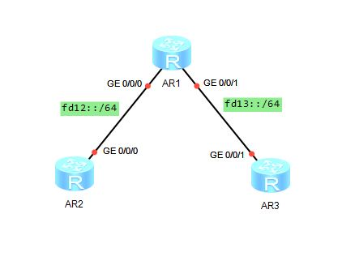

IPv6 静态路由的配置
拓扑图：
一、在三台路由器上开启IPv6功能
1 | ipv6 |
二、在三台路由器上配置接口IPv6地址
1 | interface g0/0/0 |
1 | ipv6 enable |
1 | ipv6 adress fd12::1 64 |
1 | quit |
三、查看路由表
1 | display ipv6 routing-table |
四、查看路由器IPv6邻居
1 | display ipv6 neighbors |
五、配置静态路由
1 | ipv6 route-static fd13:: 64 fd12::1 |
六、默认路由的配置
1 | ipv6 route-static :: 0 g0/0/0 fd12::1 |
七、汇总路由的配置
1 | ipv6 route-static fd00:8ab:17de:: 61 g0/0/0 fd12::2 |
八、查看汇总路由
1 | display ipv6 routing-table protocol static |